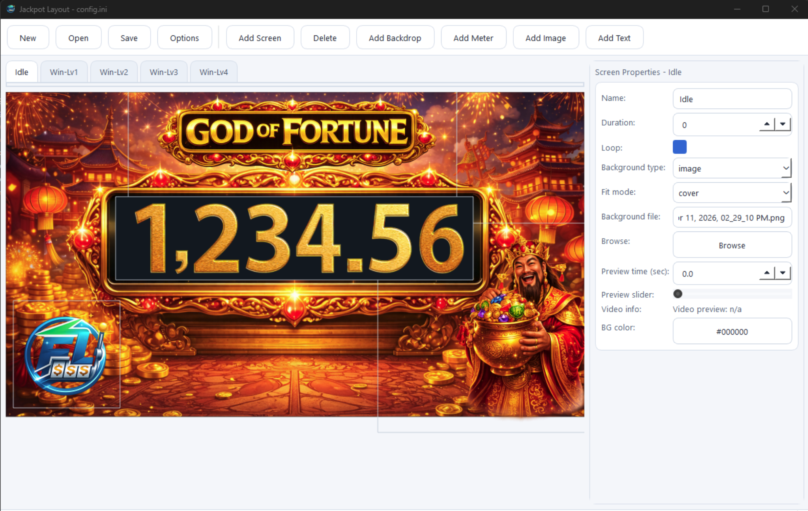

01
Visual screen builder
Add screens, place meters, drag images, add text, and control layout elements directly in the editor.
FrameLogic Display Runtime helps casino owners create unique, modern jackpot themes while still using their existing Paltronics Rev4 and Rev7 controller setup. Build your own Media PC, connect to Paltronics, and transform outdated jackpot presentation into a branded, high-impact display.
Custom jackpot presentation platform for legacy Paltronics systems
Many casinos still rely on older Paltronics hardware, but their jackpot graphics look outdated. FrameLogic Display Runtime gives operators a practical way to refresh the experience with modern visuals, custom themes, and stronger branding while keeping the Paltronics controller in place.
Keep your existing Paltronics environment and layer a new display experience on top of it.
Design jackpot themes that match your venue, event, promotion, or house style.
Update layouts, text, graphics, and backgrounds faster using the built-in Config Manager.
“FrameLogic helps casino owners build their own unique and modern jackpot theme while still using old Paltronics controllers.”
This is one of FrameLogic’s biggest selling points. The built-in Config Manager allows users to build their own jackpot layouts visually, without needing a developer to modify every screen.

Add screens, place meters, drag images, add text, and control layout elements directly in the editor.
Create separate screens for idle state and winning levels so your jackpot presentation feels more dynamic and polished.
Use image or video backgrounds, set looping behavior, define duration, and fine-tune the look of each screen.
FrameLogic Display Runtime is not just a runtime window. It is a full jackpot presentation solution for operators who want a cleaner, stronger, more modern display layer.
Purpose-built for supported Paltronics controller environments so you can present compatibility clearly to buyers.
Run video and image-based jackpot themes for promotions, festive campaigns, premium rooms, and property branding.
Deploy FrameLogic on your own Media PC and connect it to Paltronics without locking yourself into expensive proprietary display hardware.
Offer each venue a distinct jackpot theme that matches their floor style, promotions, and visual branding goals.
Adapt screens for different venues, different promotions, and different jackpot levels without rebuilding from scratch.
Make jackpots feel more premium and noticeable with stronger visuals, larger impact, and more professional themed screens.
Perfect for venues that want better visuals without immediately replacing their jackpot controller setup.
Useful for operators and in-house technical staff who want to manage jackpot themes directly.
Great for Chinese New Year themes, VIP campaigns, draw promotions, and other branded floor activations.
“Upgrade your visuals, not your entire system.”
FrameLogic gives buyers a practical path to modern jackpot presentation: keep the Paltronics controller, build a Media PC, design custom themes, and deliver a stronger visual experience to players.
Use this landing page to pitch the product, then add your demo video, pricing, screenshots, and support terms before publishing.
Update the contact details below with your final sales channel, WhatsApp, Messenger, or business email before publishing live.
Product: FrameLogic Display Runtime
Compatibility: Paltronics Rev4 & Rev7
Email: timothypaulevangelista@gmail.com
Deployment: Buyer builds own Media PC and connects to Paltronics